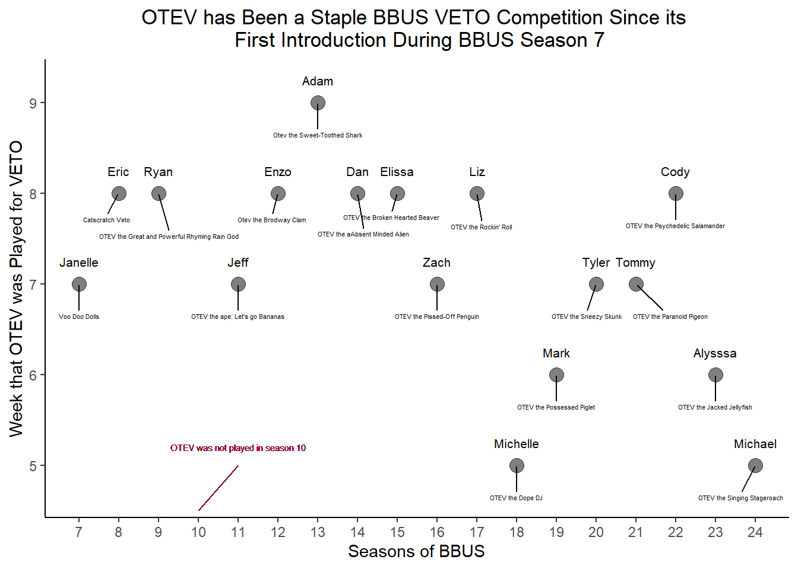
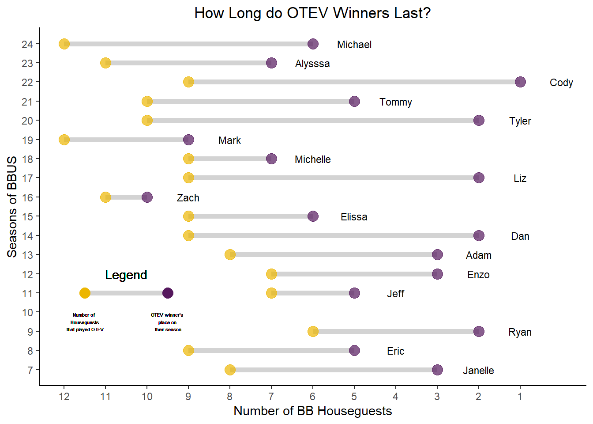
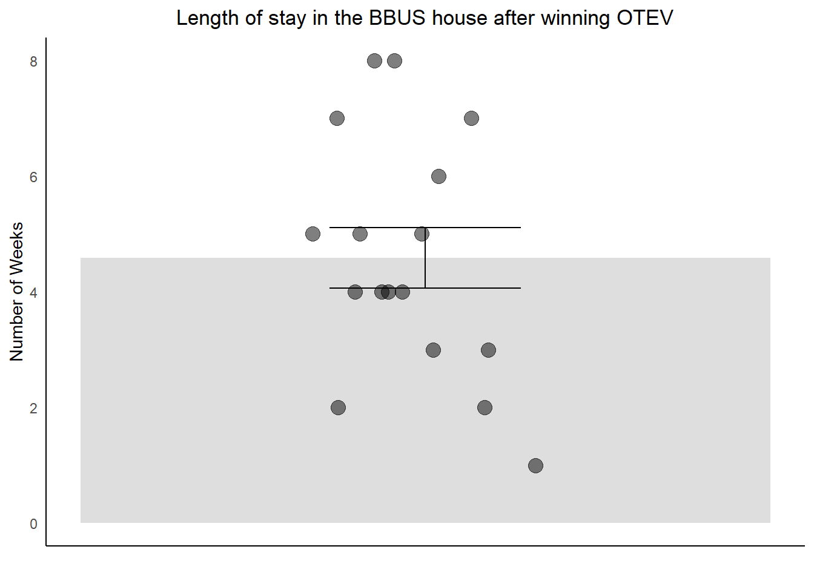
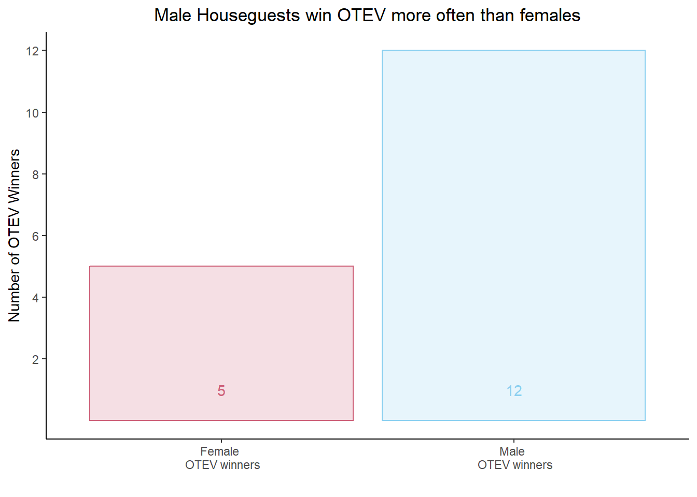

Make Graph of which week OTEV was played in each season:

Figure 1: Seasons of BBUS where OTEV was played (y-axis) plotted against which week in the season OTEV appeared (y-axis).
Key Insights:
- Since it was first introduced during season 7, OTEV has been played every season except for season 10.
- Each season OTEV has appearead as a different wacky character, but the fundamentals of the game have remained consistent.

Graph week of eviction for OTEV winners

Figure 2: How long did OTEV winners last in the game after winning OTEV? Seasons of BBUS where OTEV was played are plotted on the y-axis. Yellow circles reprsent the number of houseguests that played in OTEV and purple dots represtent the place within their season.
Key Insights:
- The only OTEV winner that has gone on to win BBUS in Cody during (sm)all stars (season 22).
- Houseguests seem to last for several weeks on average after OTEV

Figure 3: Mean number of weeks that OTEV winners last after winning OTEV. Data plotted as mean value +/- Standard error of the mean with individual data points overlaid.
Male vs female OTEV winners

Key Insights:
- 71% of OTEV winners have been male.
- Question arrising: Have equal proportions of males and females played OTEV over the years?
Interpretation:
- OTEV is a physical competition that relies heavilly on upper body strength. It is therefore not surprising that male houseguests tend to win this competition over females.